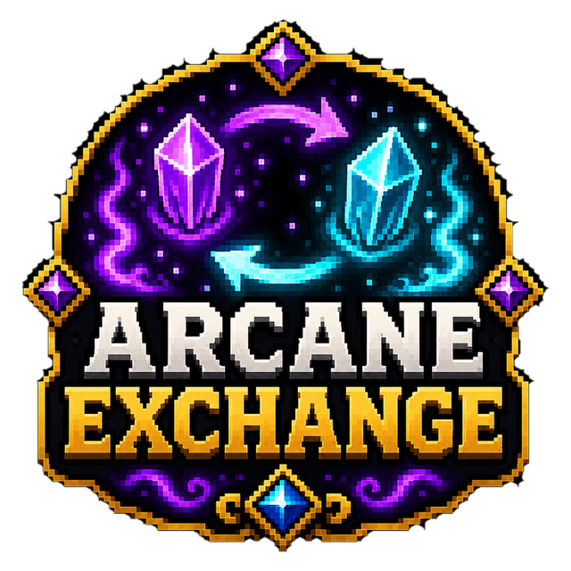

✓
Arcane energy system
A dedicated power resource connects magical production and machine use.

A magical machine system powered by arcane energy.
 Live plugin page views
Live plugin page views
Full overview
Arcane Exchange introduces a fantasy automation layer built around generated and routed arcane energy. Players progress through machines that feel like magical constructs rather than modern industrial blocks.
The system is intended to sit between manual survival and complete automation. Upgrades, tiers and resource costs create a progression path instead of handing powerful processing to players immediately.
How it works
Players begin with lower-tier arcane technology, produce energy and connect that power to useful machines. Each stage expands what can be processed or automated while demanding stronger resources and investment.
Machine behaviour and progression values are configurable, allowing a server to use the project as a compact side system or a central economy and crafting pillar.
Administration
Administrators control machine recipes, energy expectations, upgrade pacing and the overall value of automation. The project is designed to support a server economy rather than bypass it.
Feature breakdown
Each headline feature is expanded below so visitors can understand the real server use rather than seeing a short tag list.
A dedicated power resource connects magical production and machine use.
Stronger functionality is unlocked through progressively more valuable constructions.
Processing feels integrated with a fantasy world rather than imported from a technology mod.
Players invest over time instead of receiving maximum output immediately.
Resources and machine access can become meaningful market goals.
Server owners tune output, costs and pacing to suit the local balance.
Getting started
The platform buttons include downloads, changelogs and the original public resource discussion.
Install the plugin and generate its configuration.
Review machine recipes, tiers and energy values.
Introduce lower-tier machines first and test the progression curve.
Balance outputs against the server economy before wider release.
Community feedback
Live ratings and recent written reviews from the public Spigot resource page.
Review data is loaded through Spiget. Static rating fallbacks remain visible if the service is unavailable.
Related projects